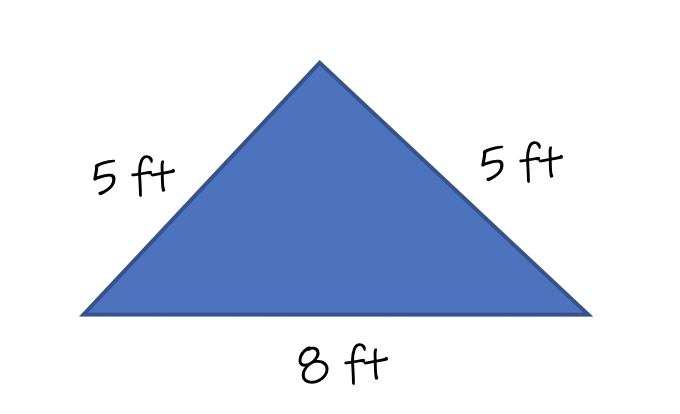

In order to "Classify a Triangle", we must look at the different characteristics of the triangle. Triangles can be measured using the length of its three sides, or by the degrees of its three angles. The classification of triangles is broken into two categories: classification based upon the sides, and clasification based upon the angles.
Let's first examine the side lengths. There are three possibilities when looking at the three sides of a triangle.
The three types of triangles are shown below. All three triangles have been classified based upon their side lengths.
The second way to Classifying a Triangle is based upon its angle degrees.
When Classifying a triangle, name it based upon its side lengths or by its angle measures.
You need to memorize the names of each of the seven triangles.
Example 1: Classify the triangle based upon its side lengths.
Solution: Looking at our list at the top, there are three possible names for a triangle classified by its side lengths: scalene, isosceles, or equilateral.
Looking at this triangle, no sides share the same length. Therefore, the answer is this is a Scalene triangle.
Example 2: Classify the triangle based upon its side lengths.
Solution: Looking at our list at the top, there are three possible names for a triangle classified by its side lengths: scalene, isosceles, or equilateral.
Looking at this triangle, all three sides share the same length. Therefore, the answer is this is an Equilateral triangle.
Example 3: Classify the triangle based upon its side lengths.

Solution: Looking at our list at the top, there are three possible names for a triangle classified by its side lengths: scalene, isosceles, or equilateral.
Looking at this triangle, two sides share the same length. Therefore, the answer is this is an Isosceles triangle.
Example 4: Classify the triangle based upon its angle measures.
Solution: Looking at our list at the top, there are four possible names for a triangle classified by its angles' degrees: Acute, Obtuse, Right, or Equiangular.
Looking at this triangle, all three angles are acute. Therefore, the answer is this is an Acute triangle.
Example 5: Classify the triangle based upon its angle measures.
Solution: Looking at our list at the top, there are four possible names for a triangle classified by its angles' degrees: Acute, Obtuse, Right, or Equiangular.
Looking at this triangle, One angle is obtuse. Therefore, the answer is this is an Obtuse triangle.
Example 6: Classify the triangle based upon its angle measures.
Solution: Looking at our list at the top, there are four possible names for a triangle classified by its angles' degrees: Acute, Obtuse, Right, or Equiangular.
Looking at this triangle, all three angles are the same degrees. Therefore, the answer is this is an Equiangular triangle.
Example 7: Classify the triangle based upon its angle measures.
Solution: Looking at our list at the top, there are four possible names for a triangle classified by its angles' degrees: Acute, Obtuse, Right, or Equiangular.
Looking at this triangle, one angle is 90°. Therefore, the answer is this is a Right triangle.
When classifying triangles, it is important for you to memorize the names and characteristics of each triangle. Until you have them memorized, refer back to the list to help you name the triangle.